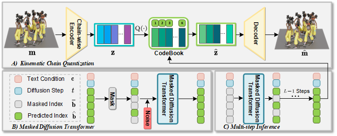
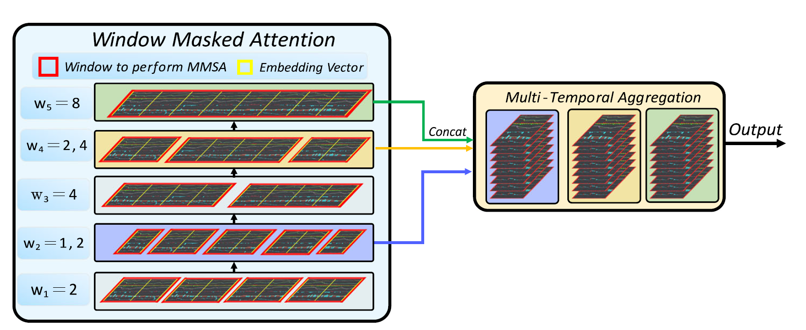

About Me
Master Student in Computer Science at McMaster University, Canada.
I'm currently a Master student working under the supervision of Professor Yingying Wang. I am conducting research related to 3D generation, specifically focusing on human motion generation. I am also interested in applying AI technologies to other areas of graphics, such as digital avatar, extended reality, neural rendering, and more.
During my undergraduate studies, I focused on computer vision under the guidance of Professor Ping Li and gained practical experience in sequence prediction under the supervision of Professor Wang Dongjing. After graduation, I worked as a software development engineer at Huawei for 9 months.
Main Publications
-
Masked Deconstructed Diffusion for 3D Human Motion Generation from Text
Jia Chen, Fangze Liu, Yingying Wang.
IEEE AIxVR 2025 (Under Review) [Webpage]
-
Gated three-tower transformer for text-driven stock market prediction
Jia Chen, Tao Chen, Mengqi Shen, Yunhai Shi, Dongjing Wang, Xin Zhang.
Multimedia Tools and Applications [Paper]
More About Me
I love animation, which inspires my research. Shirobako introduced me to the basics of 2D and 3D animation. Recent 3D Japanese animations like Girls Band Cry highlight the future of AI in creating high-quality animation.